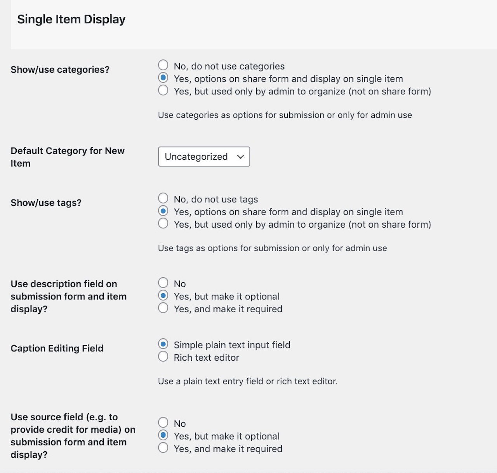

These instructions are a reference for the settings within the SPLOTbox; if you are reading this, you got as far as installing and activating the theme. Below are basic instructions for all of the theme options, which, if this were designed well, you likely do not need me to explain, but #BecauseDocumentation here we go.
As of version 1.1 SPLOTbox provides links that display archives of content that have the same reuse license (if the feature is activated via the SPLOTbox options). This page is created automatically on new sites, or simply by activating the theme again (activate the parent Garfunkel, then activate SPLOTbox again).
This page (see example) provides links to view all content with the licenses available on the sharing form. The url including licensed/cc-by yields all items with a Creative Commons CC By Attribution license example.
Use the page to find links to the ones you wish to use and add to your site’s menus or widgets. If the links do not work, you may have to go to Settings – Permalinks and just click save to regenerate the settings.
For extra flexibility there is a [licensed] shortcode that can be used in a widget or any page to display the same index list in a sidebar. By default, it lists only licenses used (e.g. it skips licenses with zero uses); to show all licenses, use the code [licensed show="all"].
Upon activation the theme will set up a SPLOTbox Options link that appears in the black admin bar at the top of your Wordpress Dashboard interface (when logged in), and in the “Appearance” tab on your Wordpress Dashboard.
Leave the Access Code field blank if you want any visitor to be able to see and use the submission form on your site.
If you want to provide an access code (a very weak password), just enter it in this field. Visitors mist enter the correct code to see the full upload form.
Enter a decent Access Hint that will be displayed if someone does not enter the correct code.
Use this area to assign the two WordPress Pages used in the SPLOTbox. One to create the Sharing form and the other to display the content by reuse license applied (this can be ignored if this feature is not used).
You can now use any name you want for the URL (previously these were forced to be /share and /licensed – this is no longer required).
If no Page is found with the correct template, you will see a prompt to create one. If the Page is found (and there might even be more than one, you can select the one you want used for each special page.


Ser the status for submitted content to your SPLOTbox. The Status for New Items lets you set up moderation for submissions (by choosing draft or pending) whereas Publish immediately provides instant gratification to your visitors, though leaves open the problems of a site where anyone can publish (the latter option thus works for sites where you set up an Access Code as described above).
There is no real difference between using draft or pending both are not public until their status is changed by a site admin; they are just organized differently in the dashboard.
Check Enable Comments on Items to add a standard blog comment field at the bottom of all published items.
The checkboxes here allow you to control the types of sites that are able to add content directly to a SPLOTbox site by URL only (using WordPress embed or built in support for Internet Archive and Adobe Spark). This would allow you to maintain a site for only certain sources, say only video from YouTube or vimeo.
These checkboxes should be enabled, but you may have to manually set them.

Also, if you only want visitors adding media by URL, you can hide the uploader. And you can set a limit for upload size.

The default settings for the display of itms are for typical blogs where newest content is displayed first. The sort options allow you to change that across the site- the home page, category/tag archives, and search results.

Date Published is the default option, the order is Descending, or newest first, change to Ascending to have oldest items appear first.
Change the sort otder to Title to… yes… sort items alphabetically by each item’s title. Use Ascending for alphabetical order (A-Z) or Descending to reverse (Z-A).
You can control many of the other options to make your upload form simpler.,

You can choose to not ask visitors to set a category for their items and thus not have categories displayed on views. If you do use categories.. create them first! You can then select the default category that should be used for new items.
Like categories, you can choose to offer or hide a form field for entering tags.
You can choose to suppress the description field (if you want media shared only), or if making the description field available, you can require that it has something written in it. The editor can either be simple text (no formatting) or the full visual editor, which also allows uploads of images to be used in the body text. Use the rich text editor when asking for longer amounts of description.
You can also choose to use a field if you want contributors to provide a source to credit for the media item.

Enter email addresses for people who should be notified of new submissions.

The Use License Settings enables a drop down menu offering a variety of options to indicate Creative Commons licenses as well as All Rights Reserved (boo!), Usage Rights Unknown, and YouTube Standard License which really just lets you embed videos..
Enabling the Cut and Paste Attribution adds to the display a field with an automatically formed attribution statement (based on the items’s rights license choice) that can be copied after clicking on the text. Neat, eh? Attribution is a good thing.
You can now customize the field labels and the descriptions of the form where people submit new items to a SPLOTbox site. On your site navigate to the share form, and activate the Wordpress Customizer from the admin bar.
There is a special section at the bottom to open:

Then from this pane, open “Share Form” (eventually the theme options will live here too)

And then you will see a series of fields to edit for all form field elements. For each, you can edit the title/label of the field and the prompt that appears below. As you type in the customizer fields on the left, you will see a live preview on the right:

I like short links, so I typically use a Custom Permalink setting (under Settings -- Permalinks) of `/%post_id%/’

Set up your own menus as needed; make sure that you click the Location tab to tell Wordpress to use the menu you create as the Primary menu.

Get rid of the default widgets on the site; make ’em your own.

Go build collections of media!
functions.php has now been divided up into component files stored inside `/includes/’